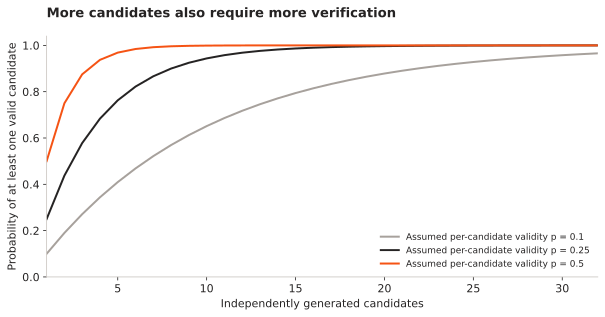

Hallucinative LLM
I want to test whether giving an LLM more room to speculate produces useful ideas after verification. The interesting outcome is a new, testable idea that survives scrutiny, rather than a confident sentence.
- Stage
- Experiment design
- Architecture
- Proposer + verifier
- Measured gains
- Not yet established
At a fixed verification budget, does speculative generation produce more valid, novel ideas than ordinary prompting?
Why I am calling it Hallucinative LLM
The starting question was whether a behaviour normally treated as a failure could help generate unusual ideas. Human perception motivated the analogy: the brain actively constructs what we experience. That analogy is a prompt for a question, not evidence that a language model and a brain have the same mechanism.
In this project, a speculative statement is explicitly a candidate. It must not quietly become a factual claim. The system should be allowed to ask “what if?” while keeping the proposed explanation, its assumptions and its test separate.
Separate proposing from checking
The proposer generates unconventional but falsifiable hypotheses. Each candidate must include what it changes, what observable result it predicts and what would refute it. A verification process then checks constraints, runs an executable test where possible and records failure as well as success.
A second LLM can criticize an idea, but agreement between models is not independent evidence. A mathematical claim needs a proof or a counterexample search; an engineering claim needs simulation or measurement. The verifier depends on the domain.
Generate a hypothesis and mark assumptions and unverified statements explicitly.
The experiment I want to run
Begin in a domain with executable checks, such as constrained mathematical or algorithmic tasks. Compare ordinary prompting, higher-diversity sampling and a proposer–verifier loop using the same model, task set and total verification budget. Hold out tasks before tuning prompts.
| Question | Measurement |
|---|---|
| Are ideas valid? | Fraction that pass the independent checker, with failure categories. |
| Are ideas different? | Deduplicated solutions and blind novelty/usefulness judgements against known baselines. |
| Is the extra search worthwhile? | Verified useful candidates per unit of tokens, compute and checking time. |
| Does feedback help? | Compare the iterative loop with the same number of independent proposals. |

What I think is worth pursuing
Increasing the amount of invented text is easy. Increasing the number of useful ideas that survive a limited checking budget is the research problem. My working hypothesis is that a clear test requirement and specific feedback will matter more than simply increasing temperature.
The current work is a proposal and evaluation design. There is no completed training run or measured creativity gain. The next step is a small reproducible task set with a checker, before considering model fine-tuning.
References and project records
- Tree of Thoughts
Related work on searching across multiple reasoning paths.
- Self-Refine
Related work on iterative feedback; self-critique alone is not an external correctness test.
- Reflexion
Related work on using feedback from earlier attempts in later decisions.